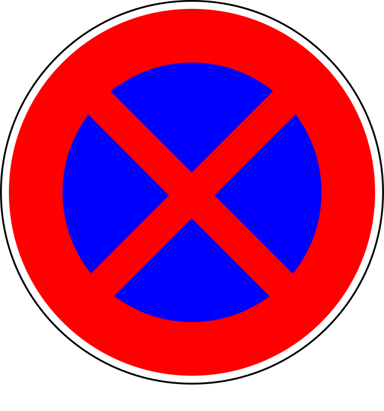
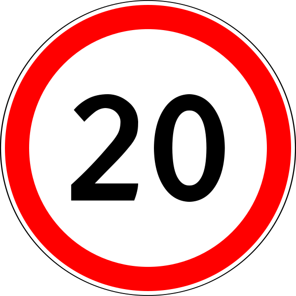

Маршрут ПУ-10
Карта маршрутов ТТП (ПУ-10)
Данная карта дает приблизительные данные, нахождения и действия знаков 3.24 (только 20км) и 3.27
 3.27 Остановка запрещена
Показать
 3.24 Ограничание скорости 20км
Показать